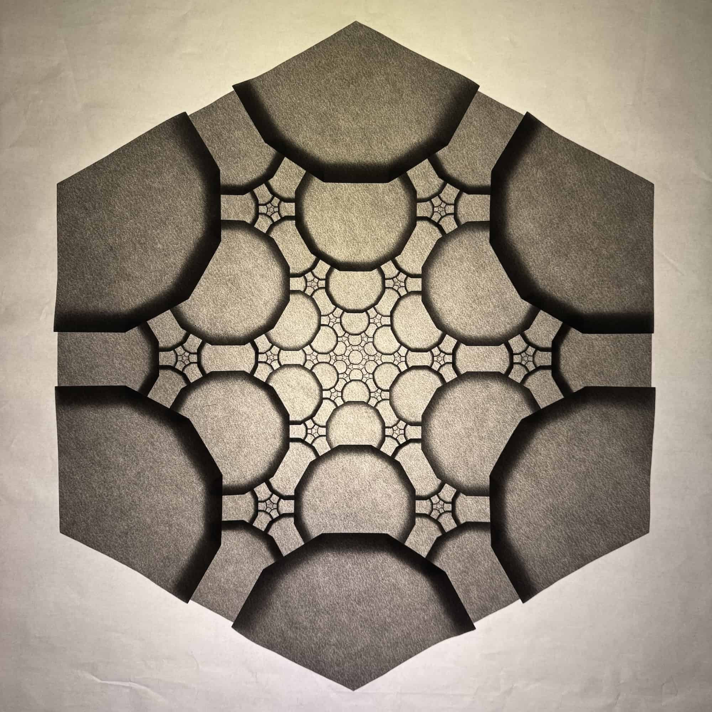
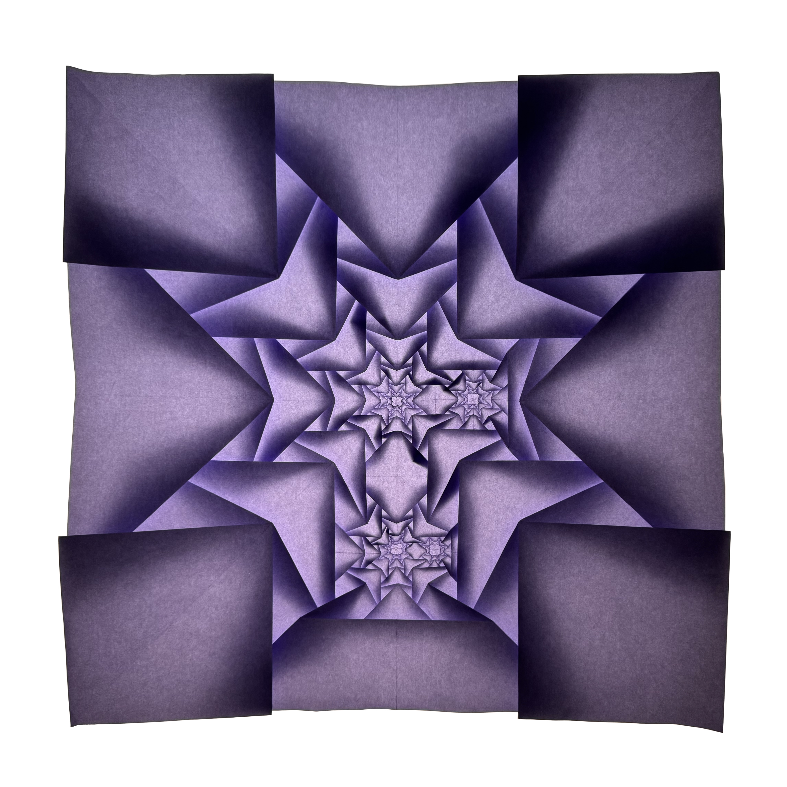
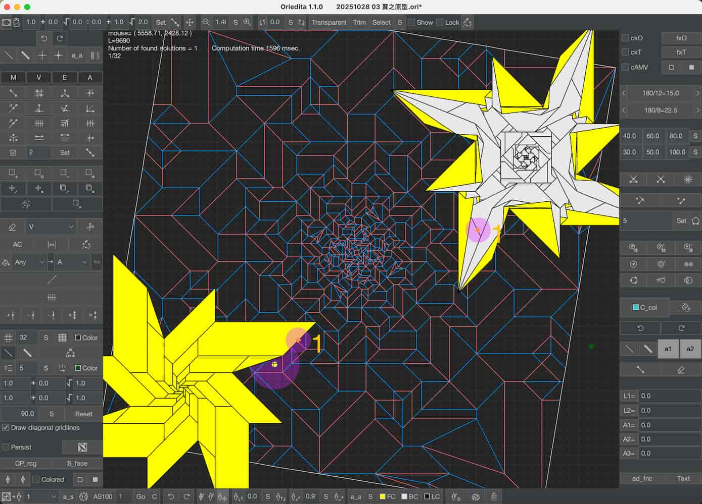
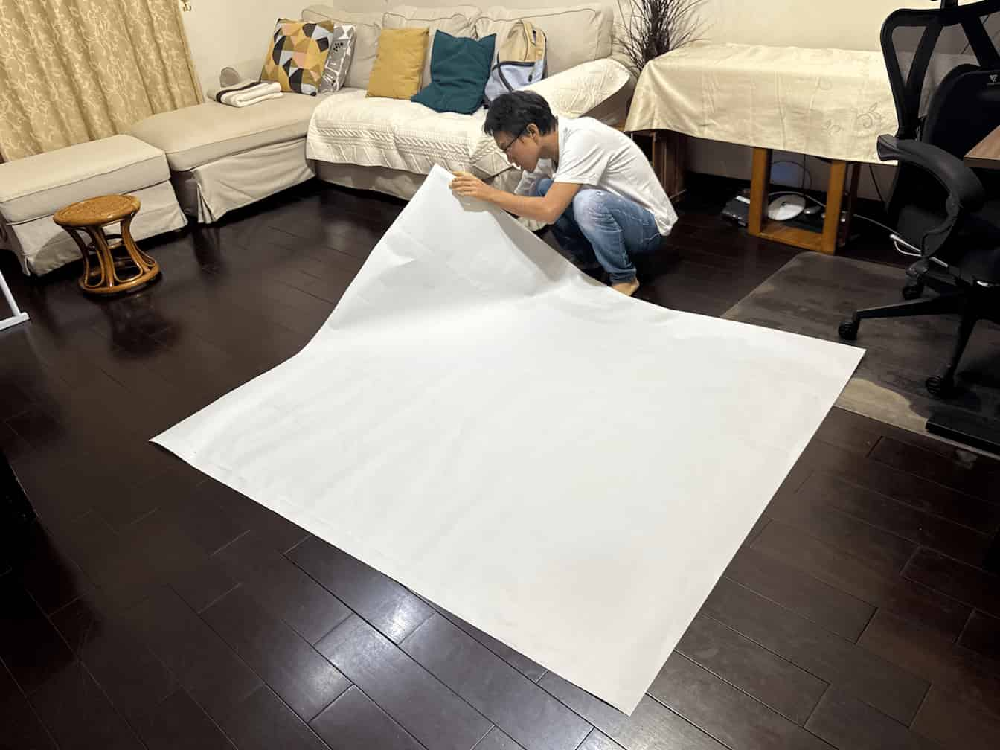
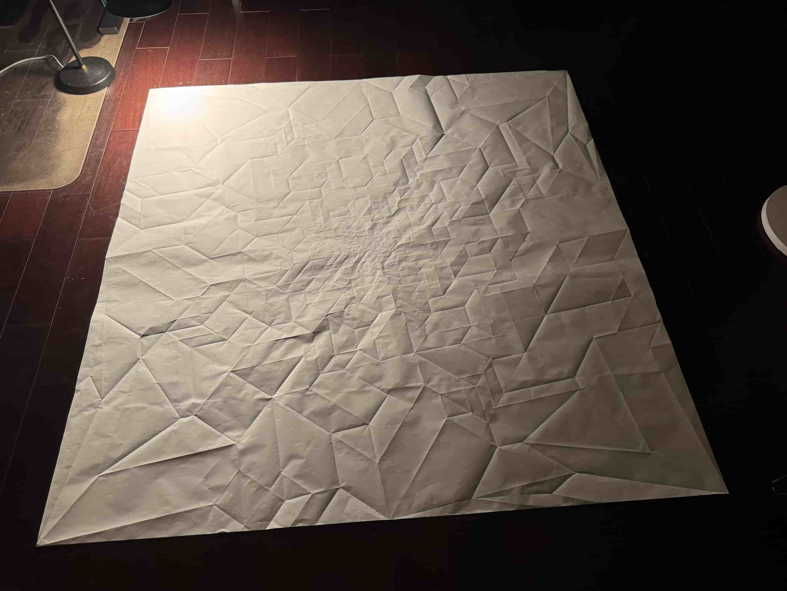
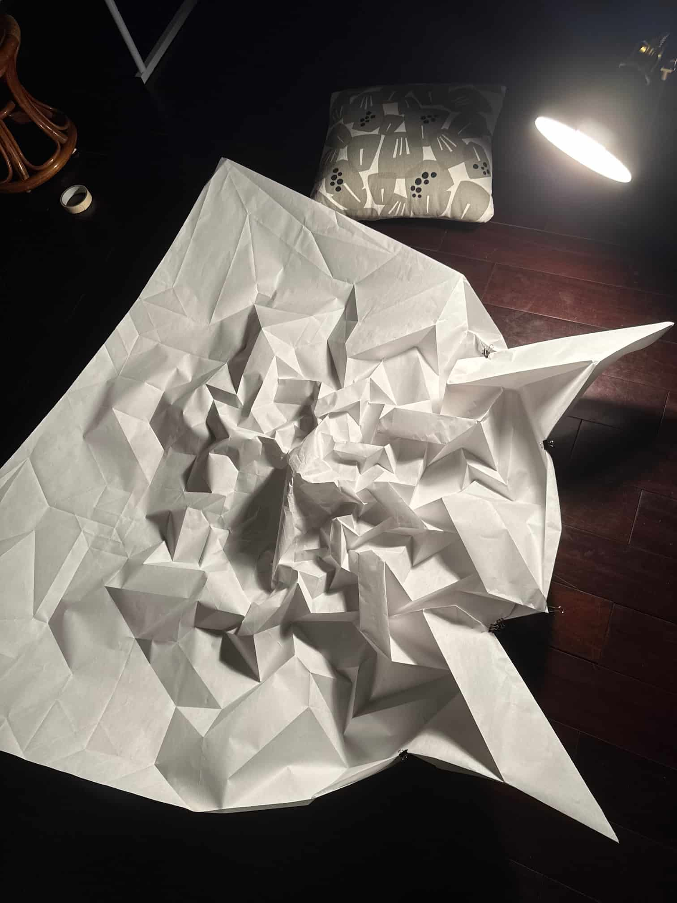
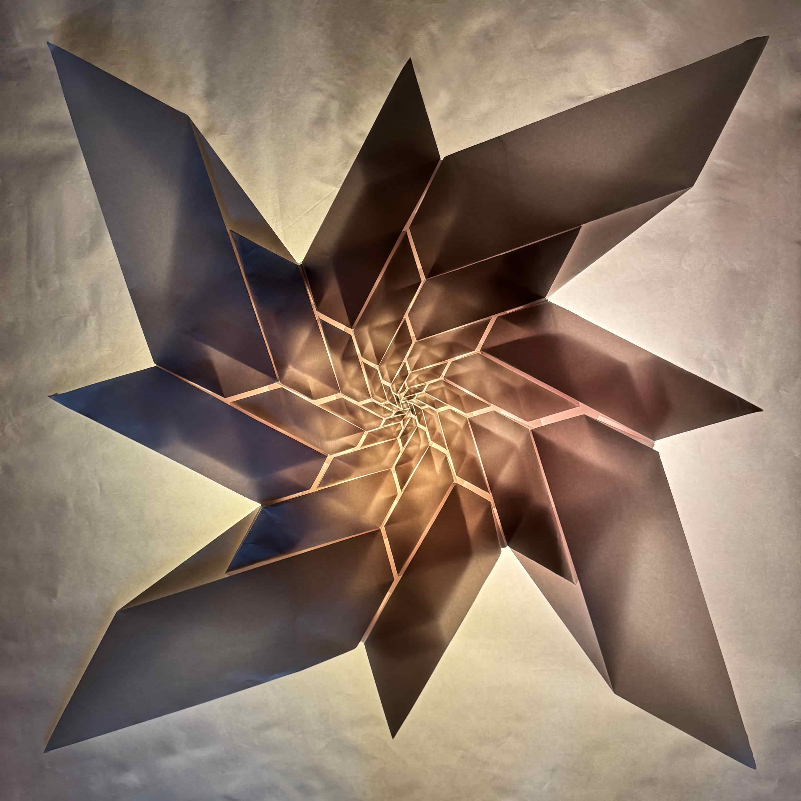
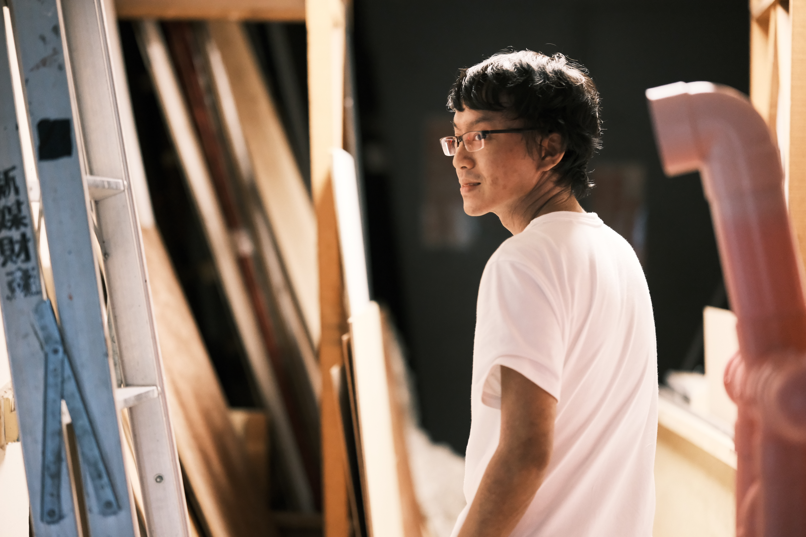

數學的精密，音樂的呼吸。
以一張紙，折出無限內縮的宇宙結構。
The precision of mathematics, the breath of music.
From a single sheet — structures that spiral inward without end.


創作理念Artistic Principle
所有作品均為羅浦堤原創設計，以一張完整的紙親手折制，不剪不黏。目前已發展逾五十個獨立原創結構。 All works are original designs by Pu-Ti Lo, folded by hand from a single uncut, unglued sheet of paper. Over fifty independent original structures have been developed to date.
在 Instagram 查看更多作品 View More Works on Instagram →每件作品的誕生，是一段從電腦螢幕到地板、從數學邏輯到手指觸感的漫長旅程。每個步驟動輒數十小時。 Each work is a long journey from screen to floor, from mathematical logic to the touch of fingertips. Every step demands tens of hours.






西方古典音樂的根基只有十二個音；折紙的世界只有山線、谷線與三大公理。極度有限的元素，卻能生成無遠弗屆的可能性。他在這兩個世界裡看到同一件事：最高級的自洽，能包容自身的複雜性。 Western classical music is built on twelve notes. Origami on mountain folds, valley folds, and three axioms. Radically finite elements — and yet infinite possibility. In both worlds he sees the same truth: the highest form of coherence can hold its own complexity.
他偏愛音樂裡最感性、詮釋空間最大的作品；他的折紙，卻是最理性的東西——碎形、幾何、數學邏輯精密到極致的結構。他相信，這不是矛盾，而是從兩個相反的方向逼近同一件事。 He is drawn to the most emotionally open music — yet his origami is the most rational of things: fractal, geometric, mathematical logic at its limit. He believes this is not contradiction, but two paths approaching the same destination from opposite directions.
紙 本是自由的
白 本是未定義的
折紙人想在紙上造夢
卻得先讓夢的疊加態坍縮
刪去所有其餘只餘唯一
然而相變的 不能靜如白紙
紙上擾動的混沌
是秩序散逸時回首的浪花
還是尚未但將要成型的意義
在沸騰前顫抖的狂喜？
三大折紙公理見證
我以山谷線親手羅織
癡迷鑲嵌的罪之經緯
一紙蒼白判書上
條條苦行的痕
不是禁錮的牢籠
那是碎形的夢
破繭前夕的縫
晨昏顛倒 沒日沒夜
癡狂的答辯莫須有
數罪併罰
判
一夜強制無眠
人物側寫Profile
不知道從什麼時候開始，浦堤來家裡跟魏樂富上課的時候，都會帶上自己折的作品來。一張紙折成的鋼琴、一隻鷹、傳說裡的三足金烏，還有各種他自己設計的、讓人眼花撩亂的碎形鑲嵌作品。每次看到新作品，我都覺得不可思議——不只是技術，而是他看待事物的角度。他的碩士論文用數學圖表分析鋼琴演奏中最難以量化的彈性速度——用理性的工具去逼近最感性的東西。這種思維方式，在他的折紙裡也看得到。
他這些年走了一條不尋常的路。下棋、折紙、碎形幾何——很多老師可能會擔心，但我從來不擔心浦堤。一個真正知道自己在找什麼的人，不管走了多遠，都會找到路回來。
他的畢業音樂會，把鑲嵌折紙燈箱搬上了北藝的音樂廳舞台。鋼琴在中央，發光的幾何結構圍繞四周。每張摺紙花了四十到五十個鐘頭，每首曲子需要同樣漫長的練習——台上呈現的，是上千鐘頭的辛勞。我在台下看著，心裡只有一個念頭：這個人，把兩個世界帶到了同一個舞台上。在畢業音樂會上，這應該是前所未有的。
喬賽爾獎（Joisel Award）以已故折紙大師 Éric Joisel 之名命名，是全球規模最大、最具聲望的折紙藝術競賽，素有「折紙界奧斯卡」之稱，吸引世界各地頂尖折紙藝術家參與。浦堤以《夢幻泡影》奪得抽象技術組首獎及最佳觀眾人氣獎，並以《心之遞迴》獲得抽象詮釋組第二名。
現在，他的研究與創作終於在這個全球最大的折紙競賽中獲得三項大獎，我一點都不意外。
I first met Pu-Ti on a hiking trip that Rolf-Peter organized for his students. He was still a student then, and what I remember most from that first impression was his severe allergies — there was almost nothing he could eat at shared meals.At some point, whenever Pu-Ti came to our home for lessons with Rolf-Peter, he would bring along something he had folded. A piano made from a single sheet of paper. An eagle. The three-legged golden crow of legend. And an ever-growing array of fractal tessellation works of his own design — each one more astonishing than the last. Every time I saw something new, I found myself thinking: it isn't just the technique. It's the way he sees things. His master's thesis used mathematical graphs to analyze the most unquantifiable element of piano performance — rubato — applying rational tools to approach the most emotionally elusive of things. That same cast of mind is visible in his origami.
He has walked an unusual path these years. Chess, origami, fractal geometry — many teachers might worry. But I have never worried about Pu-Ti. A person who truly knows what they are looking for will always find their way back, no matter how far they have wandered.
For his graduation recital, he brought tessellation origami light boxes onto the concert stage at TNUA. The piano stood at the center, surrounded by glowing geometric structures. Each folded piece had taken forty to fifty hours; each piece of music demanded the same long hours of practice. What appeared on stage represented thousands of hours of labor. Watching from the audience, I had only one thought: this person has brought two worlds onto the same stage. For a graduation recital, this must have been unprecedented.
The Joisel Award — named after the late origami master Éric Joisel — is the world's largest and most prestigious origami competition, often called the "Oscars of origami," drawing the finest origami artists from around the globe. Pu-Ti won First Place and the Popular Vote Award in the Abstract Technical category with Dreamlike Ephemera, and Second Place in the Abstract Interpretation category with Recursion of the Heart.
That his work has now earned three awards at the world's largest origami competition comes as no surprise to me whatsoever.
葉綠娜Lina Yeh 葉綠娜
鋼琴家・音樂教育家
國立臺灣師範大學音樂學系教授・第十五屆國家文藝獎得主Pianist · Music Educator
Professor, Dept. of Music, National Taiwan Normal University · 15th National Arts Award
魏樂富 Rolf-Peter WilleRolf-Peter Wille 魏樂富
鋼琴家・作曲家・音樂評論家
國立臺北藝術大學音樂學系榮譽退休教授・第十五屆國家文藝獎得主Pianist · Composer · Music Critic
Professor Emeritus, Dept. of Music, Taipei National University of the Arts · 15th National Arts Award
2025.06.04
聲之形The Form of Sound
畢業鋼琴獨奏會 × 鑲嵌折紙燈光秀
台北藝術大學音樂廳Graduate Piano Recital × Origami Light Installation
TNUA Concert Hall, Taipei
2025.06.04
聲之形 海報The Form of Sound — Poster
海報背景均由折紙作品構成Poster artwork composed of original origami pieces
2025.07 上海
濮院折紙展會Puyuan Origami Convention
展覽現場Exhibition hall
2025.07 上海
濮院折紙展會Puyuan Origami Convention
展館外牆夜景Venue exterior at night
2025.07 上海
濮院折紙展會Puyuan Origami Convention
藝術家交流現場Artist exchange
2025.07 上海
濮院折紙展會Puyuan Origami Convention
藝術家與主辦方合影Artist with the convention organizers
2026.04.27
2025 Joisel Award
三項大獎得獎公告
抽象技術首獎・人氣獎・抽象詮釋第二名Three-award announcement
Abstract Technical 1st · Popular Vote · Abstract Interpretation 2nd
所有作品均為原創設計、親手折疊，限量或唯一件。All works are original designs, hand-folded by the artist. Each piece is produced in limited edition or as a unique work.
接受客製化委託——紙張顏色、材質可依空間需求調整。製作週期約六至十週。We welcome bespoke commissions — paper color and material may be tailored to your space. Production time is approximately six to ten weeks.
作品價格依尺寸與複雜度議定。歡迎來信洽詢收藏或委託事宜。Pricing varies according to scale and complexity. Enquiries regarding acquisition or commission are warmly welcomed.
無論是收藏洽詢、委託製作、展覽合作、演講教學或媒體採訪，歡迎以下列方式與我聯繫。For collection enquiries, commissions, exhibition proposals, lectures, workshops, or press — I welcome your message.